Project Overview
This lab replicates the identity and access management layer of a small enterprise network. Active Directory centralizes authentication, authorization, and policy enforcement across domain-joined systems. The goal was to build hands-on familiarity with AD architecture, understand the security controls it provides, and recognize the failure points an attacker or misconfiguration could exploit.
Architecture & Network Design
The lab runs on an isolated internal VirtualBox network (lab-net), fully segmented from the host machine and internet. Network isolation is deliberate: it prevents traffic leakage, constrains the blast radius of any misconfiguration, and mirrors the segmented design used in real enterprise environments. All addressing is static to eliminate DHCP as a variable during troubleshooting.
- Internal VirtualBox network (lab-net) — no host or internet exposure
- Domain Controller: 192.168.10.2 — Windows Server 2016, authoritative DNS for lab.local
- Ubuntu Server: 192.168.10.1 — static IP via Netplan, non-domain endpoint
- Windows 11 Client: domain-joined workstation, DHCP issued by DC
- All DNS queries for lab.local resolved exclusively by the Domain Controller
Windows Server Setup
Pre-role configuration is critical in a domain environment — a server with an inconsistent hostname or incorrect DNS settings will fail DC promotion or cause downstream authentication issues. Static IP assignment and self-referencing DNS were configured before any roles were deployed.
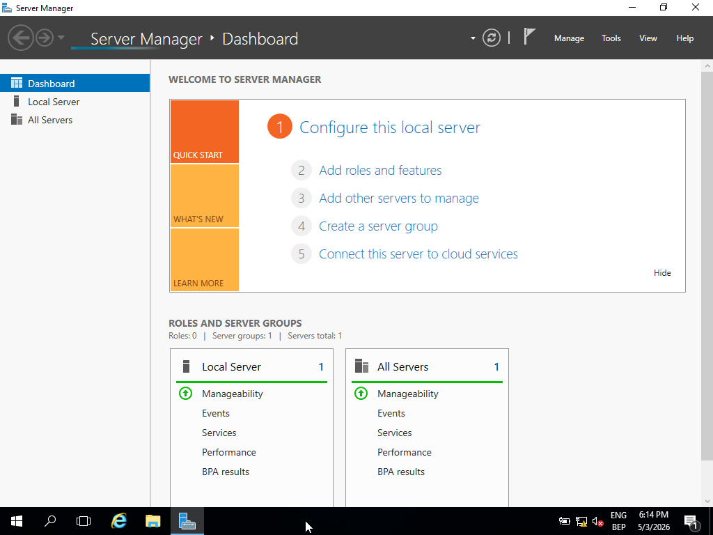
// Server Manager — confirmed clean state prior to role deployment
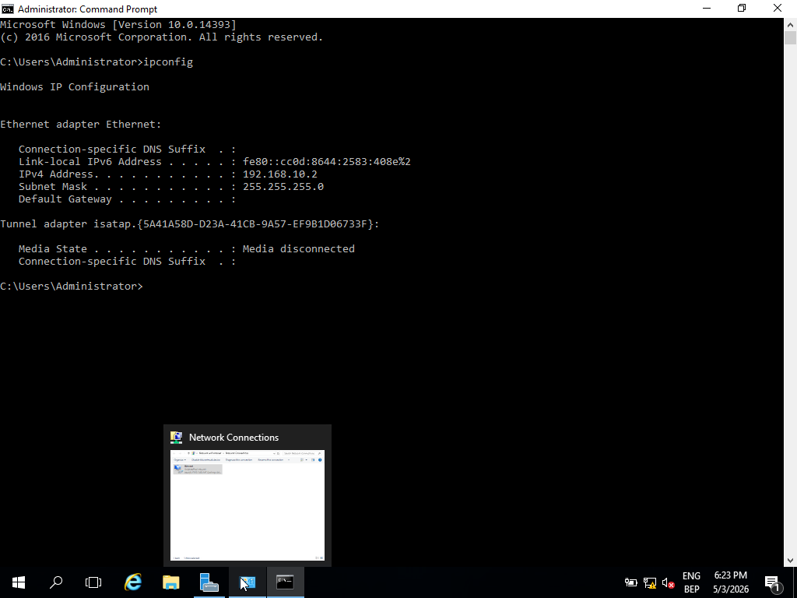
// Static IP and DNS self-reference — prerequisite for AD DS promotion
- Installed Windows Server 2016 Standard (Desktop Experience)
- Assigned static IP 192.168.10.2; DNS pointed to itself (127.0.0.1 / 192.168.10.2)
- Renamed server to an enterprise-consistent hostname before promotion
- Verified system baseline via Server Manager before deploying any roles
Active Directory Deployment
Promoting a server to Domain Controller establishes it as the authoritative identity provider for the domain. All subsequent authentication, group policy application, and domain join operations depend on this single system. DNS integration during promotion is automatic but requires a correctly configured network adapter — misalignment here is the most common cause of post-promotion failures.
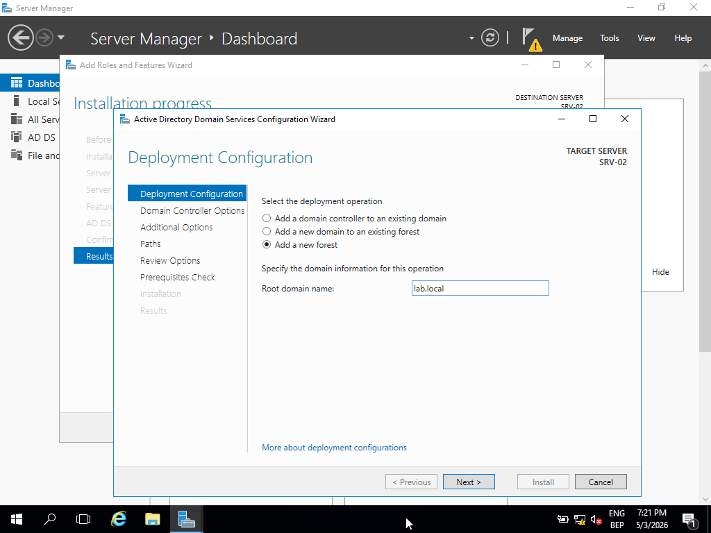
// Domain namespace defined as lab.local during DC promotion
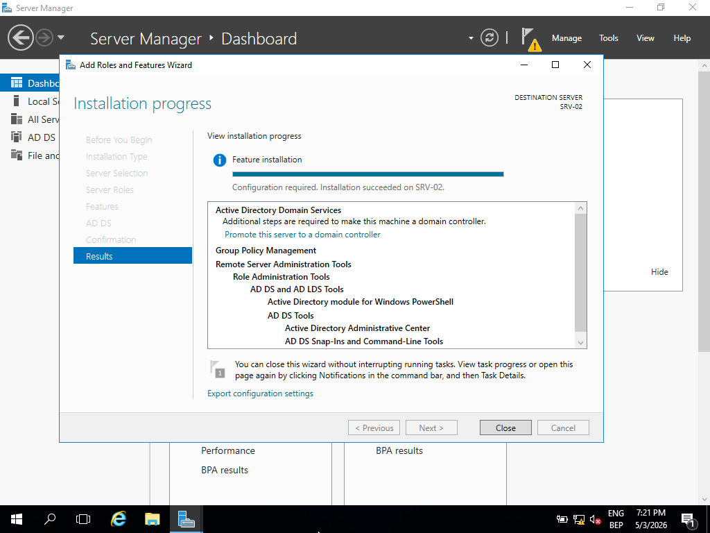
// AD DS role installation completed — server ready for domain controller promotion
Domain: lab.local — DNS forward lookup zone created automatically during promotion and bound to the DC's resolver. Post-deployment verification performed through Active Directory Users & Computers and DNS Manager to confirm zone integrity and service health.
Identity Structure (OUs, Users, Groups)
The identity model implements a lightweight RBAC structure: Organizational Units define administrative boundaries, security groups enforce access control, and user accounts map to roles within those groups. This structure mirrors production AD design — it also defines the attack surface for credential-based attacks and determines the blast radius of a compromised account.
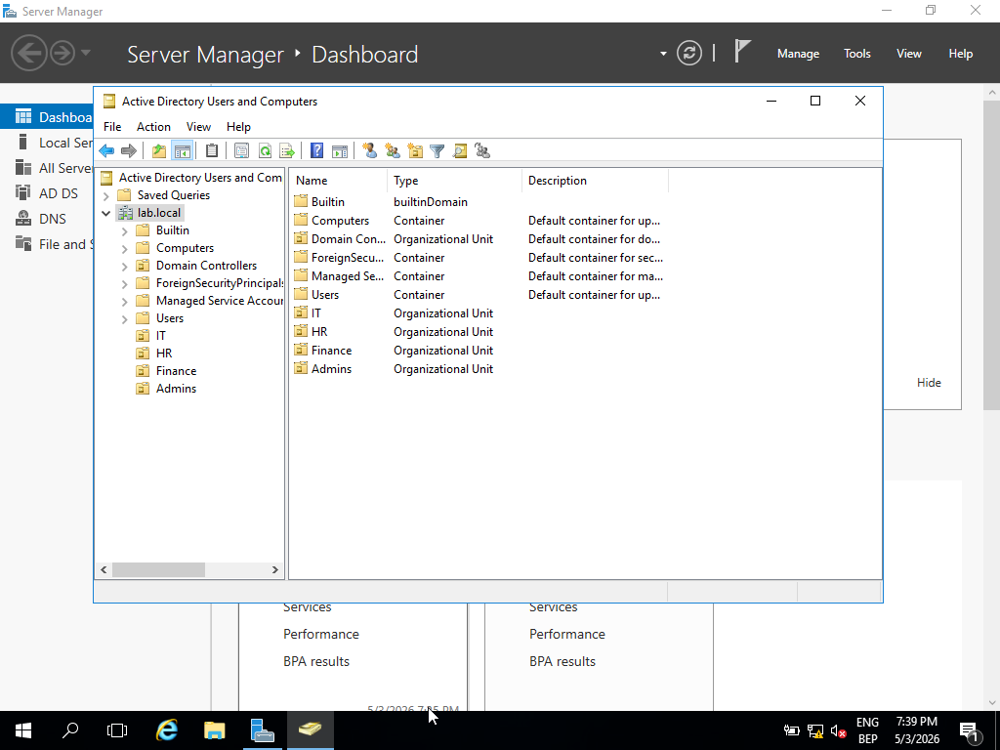
// OU hierarchy — department-level boundaries for policy and access control scope
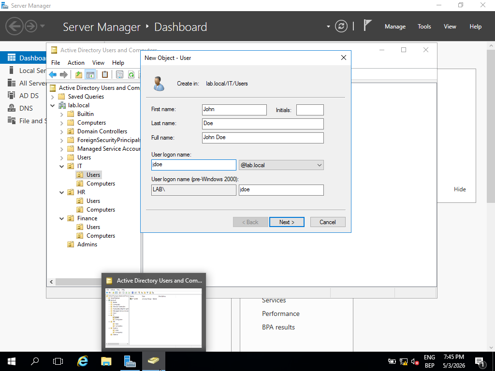
// Domain user accounts created with role-aligned naming and OU placement
- Hierarchical OU structure: Departments → Sub-OUs per team — controls GPO scope and delegation boundaries
- User accounts created with role-based naming to simulate an organizational identity model
- Security groups used as access control boundaries — group membership drives permissions, not individual accounts
- Users assigned to groups to simulate RBAC — privilege is granted at group level, not per-user
Security Enforcement (Group Policy)
Group Policy is the primary mechanism for enforcing security baselines across domain-joined systems at scale. Rather than configuring individual machines, GPOs push consistent controls from the DC to every enrolled endpoint. From a blue team perspective, GPO misconfigurations or overly permissive policies are a common source of privilege escalation paths.
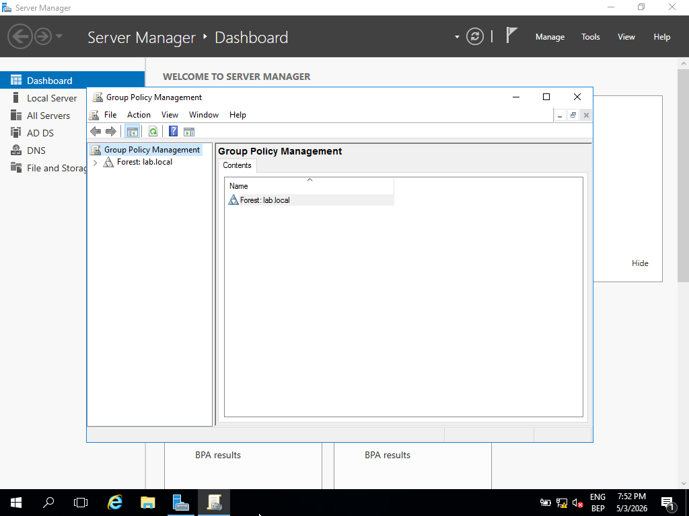
// GPMC — GPO structure linked to domain and OU hierarchy for scoped enforcement
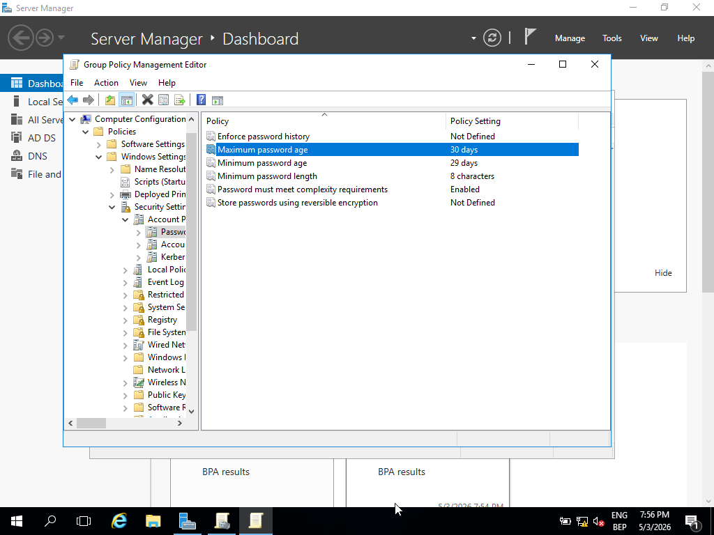
// Password policy — complexity, length, and expiration requirements enforced domain-wide
- Password policy: minimum length, complexity requirements, and expiration — reduces credential guessing exposure
- Account lockout policy: threshold and observation window configured to limit brute force attempts
- User restriction GPOs: control panel and system configuration access removed from standard accounts
- All policy objects managed and linked through GPMC — changes propagate at next Group Policy refresh cycle
Domain Integration & Validation
Domain join and policy application were validated end-to-end, not assumed. In production environments, unapplied policies are a significant security gap — enforcing the right controls and then verifying they are active on endpoints are two separate actions. gpresult provides a direct view of which policies are in effect and which were filtered or blocked.
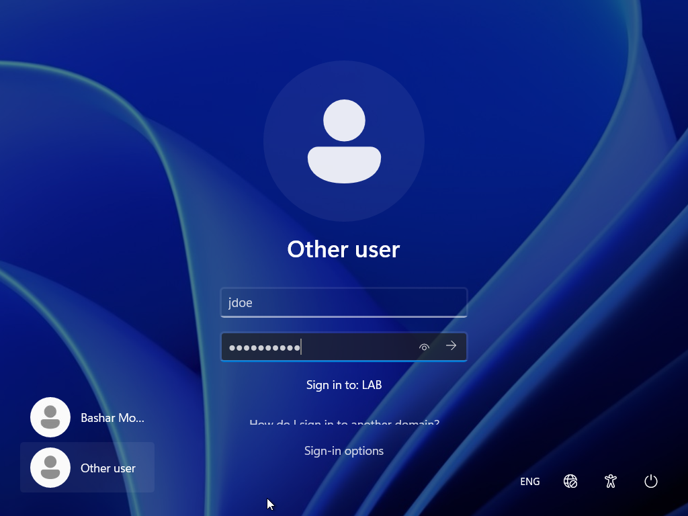
// Domain login confirmed — client authenticated against lab.local using AD credentials
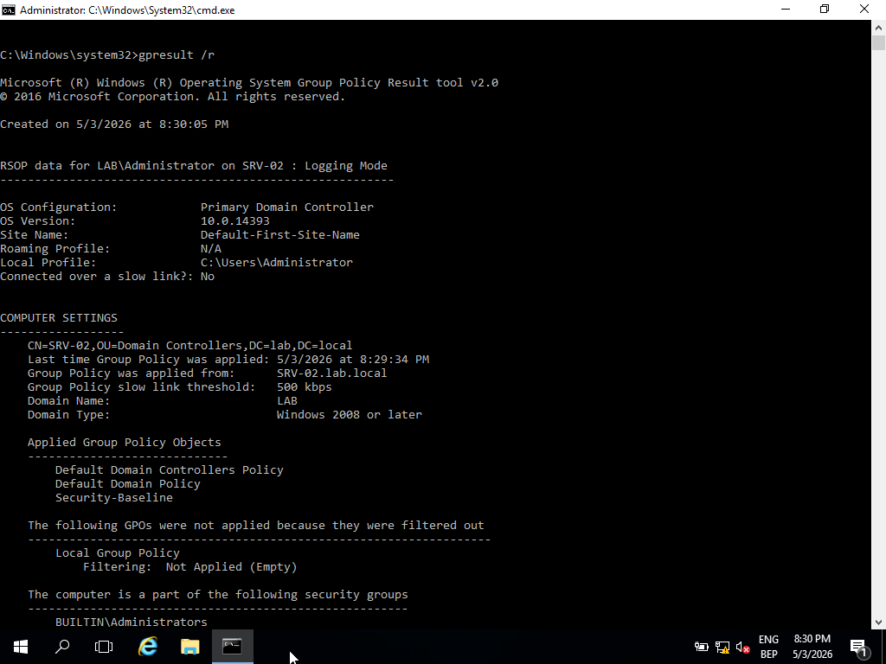
// gpresult /r — applied GPOs confirmed on client; password and restriction policies active
gpresult /r run on the Windows 11 client post-join to enumerate applied GPOs. Password policy, restriction policies, and OU-scoped objects confirmed as active. Domain credential authentication verified with multiple user accounts.
Cross-System Communication
Baseline connectivity validation across all three machines establishes a known-good network state — essential both for troubleshooting and as a reference point for detection. If ICMP or DNS fails between systems, every higher-level service (authentication, policy application, SMB) will fail with it. Verifying the baseline first narrows diagnostic scope significantly.
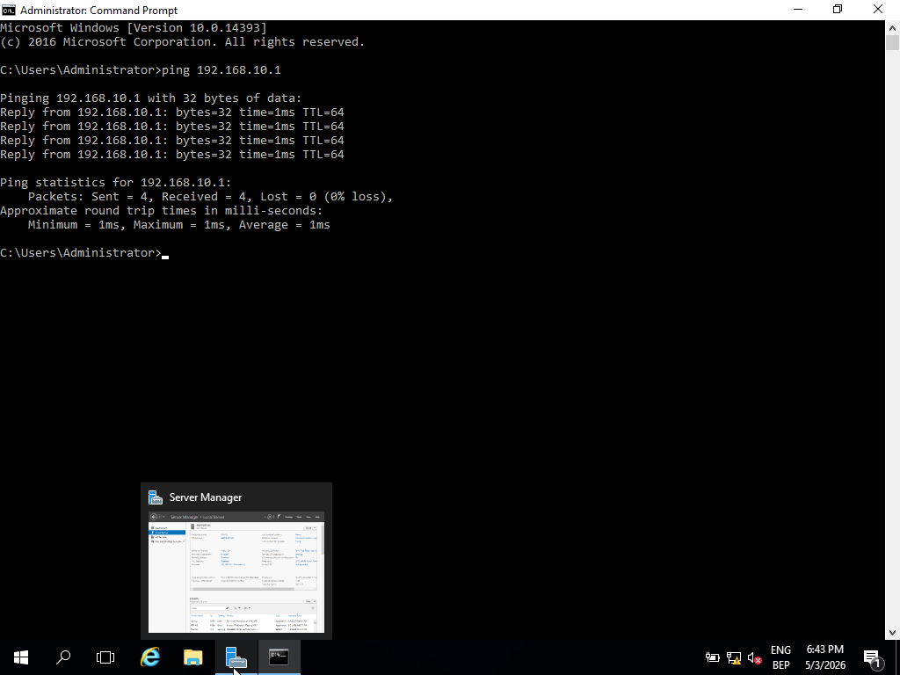
// ICMP: Windows Server (192.168.10.2) → Ubuntu (192.168.10.1) — baseline reachability confirmed
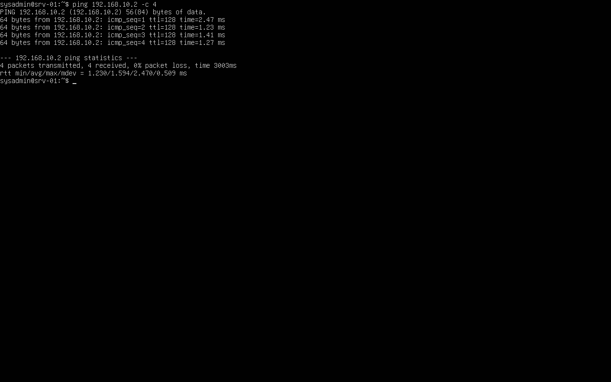
// ICMP: Ubuntu (192.168.10.1) → Windows Server (192.168.10.2) — bidirectional reachability verified
- Bidirectional ICMP confirmed between all three systems — Layer 3 routing verified clean
- DNS resolution for lab.local confirmed from domain-joined client — DC serving responses correctly
- Network isolation verified: no traffic escaping the lab-net segment
Ubuntu Server Role
Including a Linux host in a Windows AD environment reflects real-world mixed-OS infrastructure. The Ubuntu server is intentionally not domain-joined, representing a non-managed endpoint within the network perimeter — a category that presents distinct visibility challenges in a SOC context, since AD-based logging and policy enforcement do not apply to it.
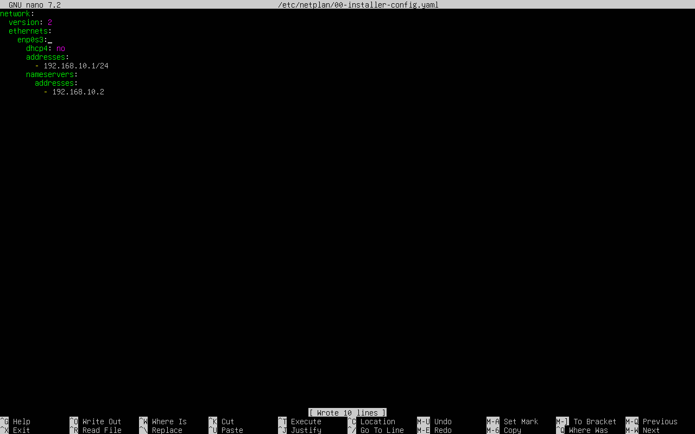
// Netplan static IP configuration — 192.168.10.1, consistent with lab-net addressing scheme
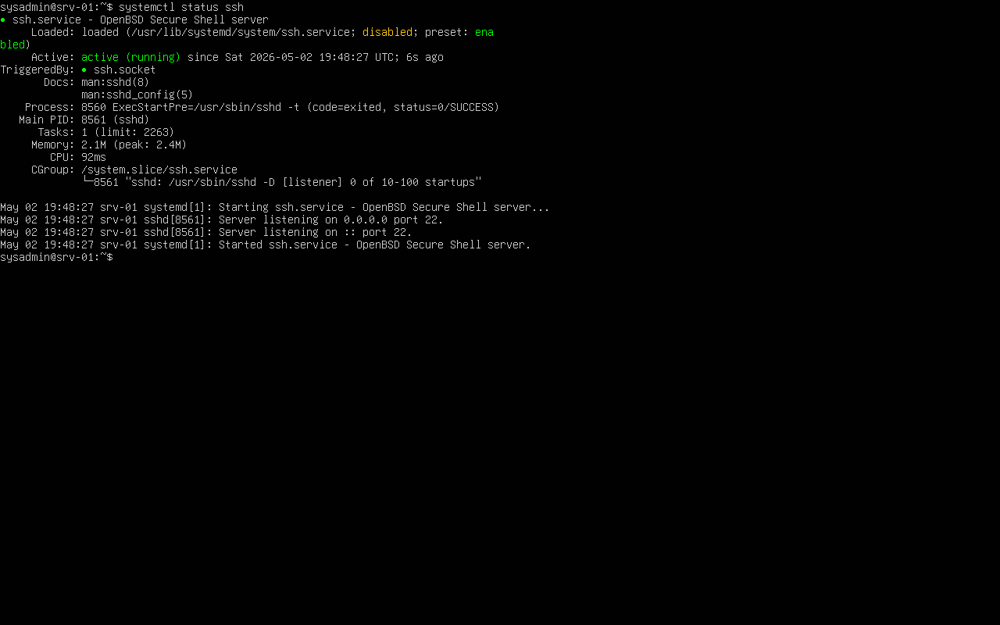
// SSH service active — remote management enabled for cross-platform access testing
- Static IP (192.168.10.1) configured via Netplan — no DHCP dependency
- SSH enabled for remote access — simulates a managed Linux endpoint in the network
- Intentionally not joined to the domain — represents a non-AD-managed system with limited policy enforcement
Key Learnings
Each issue encountered during the lab revealed a dependency that documentation understates. The following reflect real troubleshooting outcomes, not theoretical best practices.
- Active Directory is tightly coupled with DNS — a misconfigured DNS pointer prevents domain join, Kerberos ticket issuance, and policy application simultaneously
- Group Policy enforces security at scale but requires explicit verification — policies set on the DC are not guaranteed to apply until confirmed on the endpoint with
gpresult - Pre-promotion server configuration (hostname, static IP, DNS self-reference) determines whether DC promotion succeeds or fails; these steps cannot be safely skipped or done retroactively
- Connectivity and name resolution are the first diagnostic layer — every authentication and policy failure traces back to one of these two primitives
Future Improvements
The lab establishes a functional AD baseline. The next phase shifts from configuration to detection and adversarial simulation — moving the environment from an identity infrastructure build into an active blue team training platform.
- Integrate Wazuh as a SIEM — forward Windows Event Logs (4624, 4625, 4648, 4768) from the DC for authentication monitoring and anomaly detection
- Simulate credential-based attacks: password spraying, AS-REP roasting, and lateral movement via Pass-the-Hash to validate detection coverage
- Deploy Windows Event Forwarding (WEF) to centralize logs from all domain members into a single collection point
- Add a file server with NTFS permission structures, share-level access controls, and audit policy to simulate data access monitoring scenarios